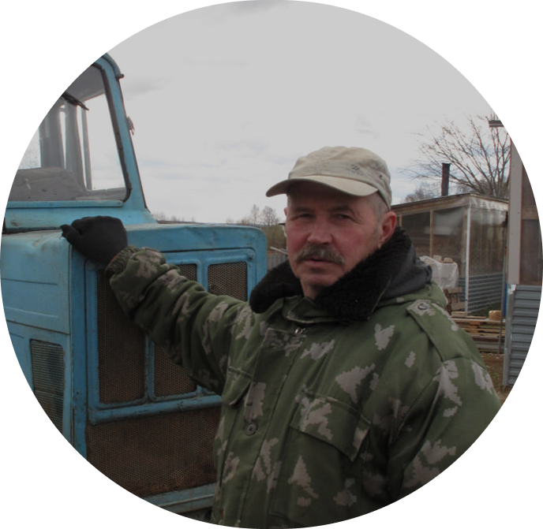

Интерактивный лесной календарь на Июнь
Лесной чек-лист на Июнь


Полезно знать


Прокачиваем навыки

Помощь на тропе
Тест о внимательности, спокойной ориентации в лесу и простых решениях в природной среде во время прогулок и маршрутов

Что взять в лес
О простых вещах, которые делают прогулку по лесу спокойнее и удобнее

Лесной экзамен
Проверь, не превратишься ли ты в «потеряшку» при виде первой сосны